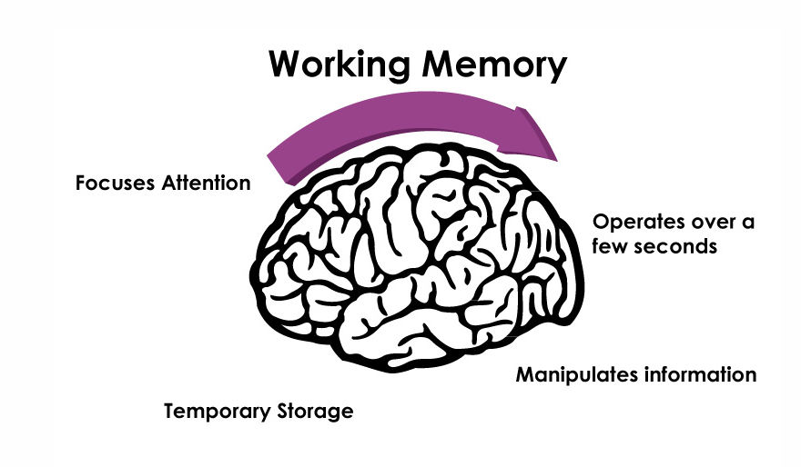
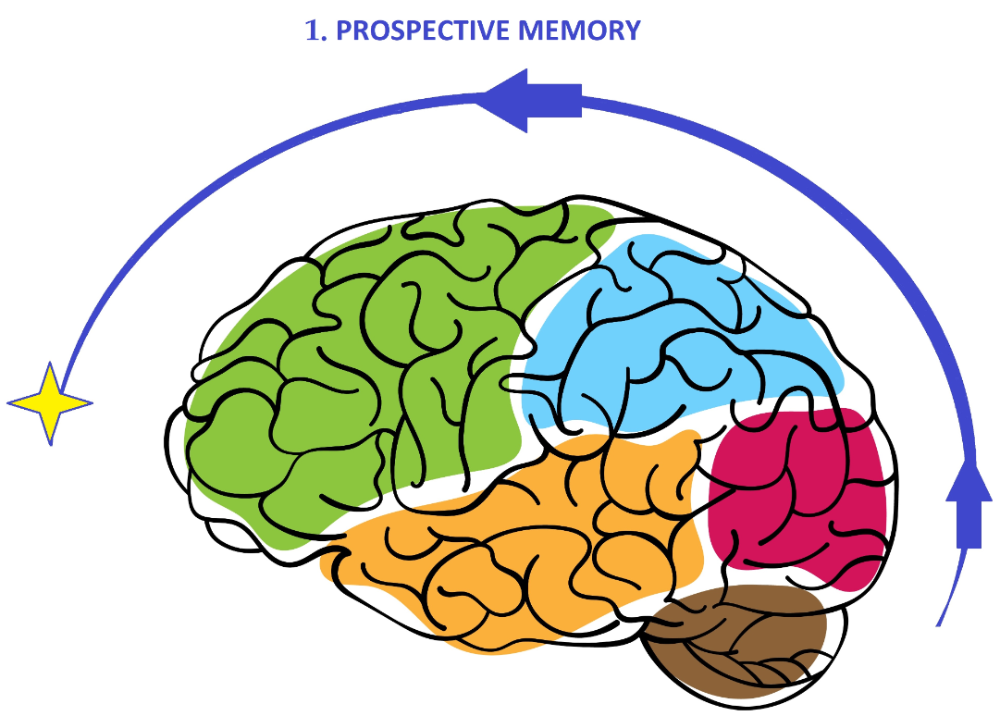
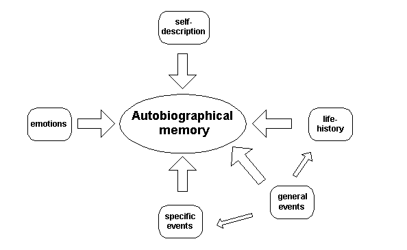

Types of Memory
Memory is a fascinating cognitive function that allows us to process, store, and recall information. Below is a breakdown of the different types of memory systems.
Short-Term Memory

Short-term memory temporarily stores and processes information for around 20-30 seconds. It has a limited capacity, often described as the "magic number" 7 ± 2 items. It is crucial for immediate tasks like problem-solving, reasoning, and decision-making.
Learn more about Short-Term MemoryLong-Term Memory
Long-term memory stores information for a prolonged period, ranging from hours to a lifetime. It includes explicit memory (episodic and semantic) and implicit memory (skills and routines). Long-term memory is vital for recalling life events and general knowledge about the world.
Learn more about Long-Term MemoryWorking Memory
Working memory is a subset of short-term memory that actively stores and processes information needed for tasks like reasoning, learning, and understanding. It's critical when performing complex cognitive tasks, such as doing math or following a set of instructions.
Learn more about Working MemoryProspective Memory
Prospective memory allows us to remember to perform future tasks, such as remembering an appointment or taking medication. It involves both time-based reminders and event-based cues, combining retrospective memory and future planning.
Learn more about Prospective MemoryAutobiographical Memory
Autobiographical memory includes personal experiences and events that define our life story. It combines both episodic memory (specific events) and semantic memory (facts about oneself), helping us maintain our identity over time.
Learn more about Autobiographical MemoryTypes of Memory Summary
| Type of Memory | Description | Duration |
|---|---|---|
| Sensory Memory | Temporary storage of sensory data | Less than 1 second for visual, a few seconds for aural |
| Short-Term Memory | Stores information for active use | 20-30 seconds |
| Long-Term Memory | Stores information for long periods | Hours, days, or a lifetime |
| Working Memory | Processes and holds information for complex tasks | Varies based on task |
| Prospective Memory | Memory for future tasks | Varies, depends on cue |
| Autobiographical Memory | Recollections of personal life events | Lifetime |